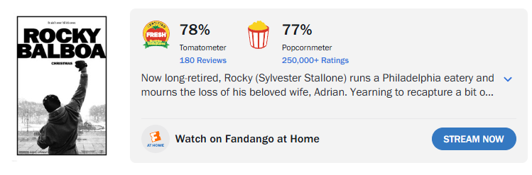
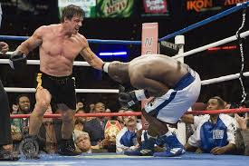
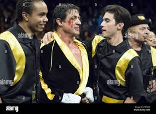
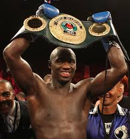

Rocky Balboa
Charles LaRose April 22, 2026
Rocky Balboa is the final film of the franchise and a great send off. Rocky Balboa releases 16 years after Rocky V. Despite this Sylvester Stallone is in tip top shape and delivers a fantastic performance. The film centers around Rocky being stuck in the past. His wife is gone and all he has left is Paulie. Rocky really struggles with this loss and visits Adrian all the time. On a more pleasant note though Rocky runs his own restaurant called “Adrian’s Kitchen”.
One day while at the restaurant Rocky sees a simulated fight on ESPN of him when he was in his prime against the current heavyweight champion Mason Dixon. Rocky wins the computer fight and this lights a fire underneath him to try fighting again. Soon after Rocky gets offered to fight a charity exhibition fight against Dixon after the virality of the simulated computer fight.
I absolutely love this film. There are many highlights including the multiple motivational speeches from Rocky, the great music, and the fantastic cinematography. This is the only Rocky movie to be shot in HD and the fight between Rocky and Dixon is shot in a HBO style broadcast adding to the realism. As expected Rocky puts up a fight with Dixon but the story makes it believable by having Dixon show up confident and out of shape to the fight while Rocky is built like a statue. Also, Dixon breaks his hand early in the fight allowing a 50 plus year-old Rocky to have a chance.
Watching Rocky overcome struggling with loss and defy the odds once again is a great send off to the franchise. Especially after Rocky V was considered a horrible film to the general public.
Click for IMDB page


Screenshots from the film and behind the scenes:



Trivia
- Antonio Tarver who plays Mason Dixon is a real life professional champion boxer.
- This is the only film in the Rocky franchise to use real punches for sound effects.
- The film was shot in only 38 days. The very first part of the film that was shot was the final fight between Rocky and Dixon.